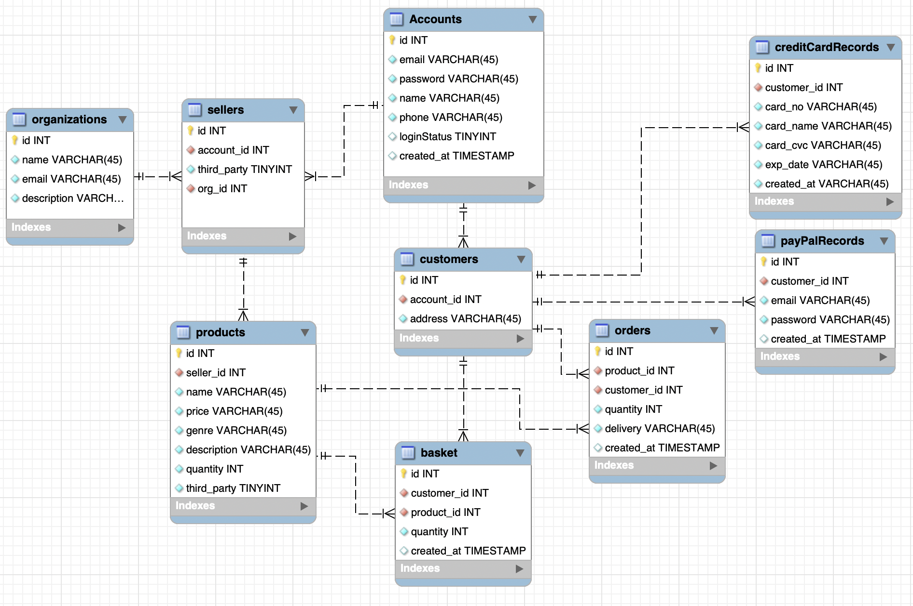
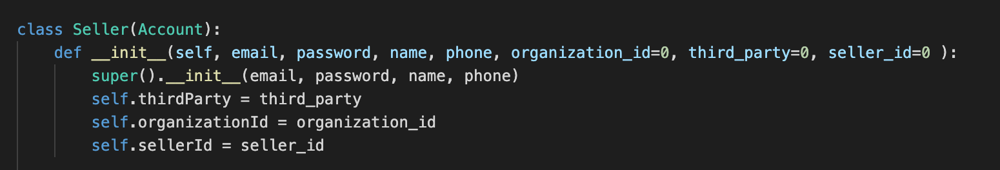
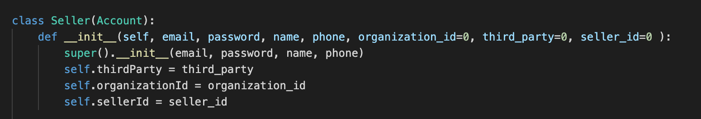
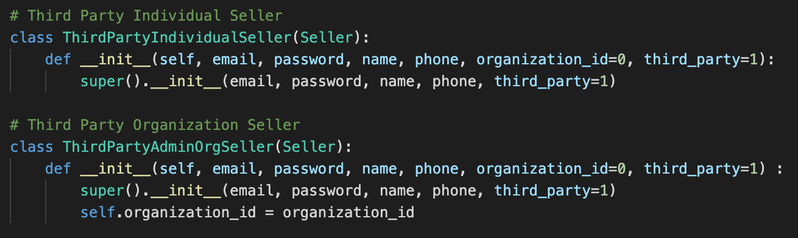
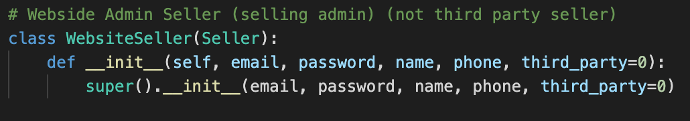
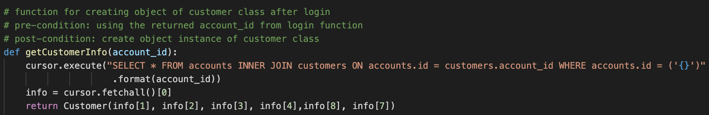
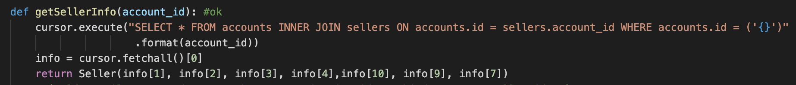

Aenean ornare velit lacus, ac varius enim lorem ullamcorper dolore aliquam.

Information systems are responsible for collecting, storing, processing and providing knowledge about information from a range of sources. Information systems are an integrated set of components that bring together hardware, software, networking, database storage as well as the human process that may be involved.
These systems are integral to the products and services that we rely on as a society and as such it is imperative that they are well-designed and developed. Object oriented design and development provides a structured approach to creating sustainable and manageable solutions.
The module examines the different elements of an information system from design through to processing and storage. You will explore the fundamental concepts behind object-oriented development using UML as a tool for analysis and design. Further to this, we will make use of Python to provide concrete experience of object-oriented development.
Equifax, which is one of the credit reporting agencies that assess the financial health of the Americans, has breached personally identifying data of hundreds of millions people in March 2017. Lax security and corruption were the critics of Equifax being accused of in the aftermath.
Brief reasons for the failure
Impact of the failure
Recommendations from Mandiant’s report (2017)
Human factor of the failure
Not only the system or server structural vulnerability make it convenient for the attacker,
factors of management or mechanism actually involved a lot in the information system failure.
The unpatched server vulnerabilities since the administrator missed the email from the CISO, the
lack of formal process in place for vulnerability patching and the lack of authorities with
mechanisms to auto-renew the digital certificates.
Reference
Fruhlinger, J. (2020). Equifax data breach FAQ: What happened, who was affected, what was
the
impact?. Available from:
https://www.csoonline.com/article/3444488/equifax-data-breach-faq-what-happened-who-was-affected-what-was-the-impact.html
Committee on Oversight and Government Reform. (2018) The Equifax Data Breach. Available
from: https://republicans-oversight.house.gov/wp-content/uploads/2018/12/Equifax-Report.pdf
[Accessed 12 February 2021]
While successful delivery of an Information System lays an important foundation for the future development of a company, resources and managerial effort in the continuous maintenance and updates of the system is also indispensable but easily being insufficient and overlooked. In the case of 2017 Equifax data breach, in addition to the system’s server structural vulnerability, which is the unsegmented server, problems in terms of management actually involved a lot (Committee on Oversight and Government Reform, 2018). The email missed by the administrator concerning server vulnerabilities patching, lack of formal process for vulnerability patching and lack of authorities with mechanisms for renewing the digital certificates.
Importance of rigorous policies for Information System regular updating and related staff training could also be seen in the cases provided by my fellow peers. For example, the outsourcing caused lost knowledge for regular system updates of the Royal Bank of Scotland system (Worstall, 2012) and the outdated hardware component, computer operation system and unimplemented security path of National Health Service (Hoeksma, 2017).
The updating and vulnerability patching of systems may be problematic and consuming for many institutions, especially when the installation of a patch requires a server or device to be restarted which may cause a service outage (Secure Team, 2019). Besides, the possible operational changes may be introduced and training may be required which may cause the companies less motivated to practice regular update and patching.
When it comes to loss of possible system incidents, expenditure on system updates and staff training would be worthy. Therefore, resources should not be spared for rigorous mechanism and policy for regular update and maintenance of the Information System, as well as staff training.
Change management team could be one of the policies, which aims at avoiding potential stability issues that arise from the patch and reduces the inconvenience caused by the update to all the stakeholders(Caiazzo, 2020). Efficient patch management suggested by Secure Team (2019) through network segmentation and automation may also reduce the cost of updating. Secure Team (2019) also suggested regimes like PCI-DSS for better identification of system vulnerabilities and how they could be fixed by the patches.
Reference
Caiazzo P. (2020) Got Patch?: Why Patch Management is Important for Cyber Security.
Executive
Editorial. Available from:
https://www.avertium.com/got-patch-why-patch-management-is-important-for-cyber-security/
Committee on Oversight and Government Reform. (2018) The Equifax Data Breach. Available
from:
https://republicans-oversight.house.gov/wp-content/uploads/2018/12/Equifax-Report.pdf [Accessed
12 February 2021]
Fruhlinger, J. (2020). Equifax data breach FAQ: What happened, who was affected, what was
the
impact?. Available from:
https://www.csoonline.com/article/3444488/equifax-data-breach-faq-what-happened-who-was-affected-what-was-the-impact.html
Hoeksma, J. (2017) NHS cyberattack may prove to be a valuable wake up call. BMJ 357. DOI:
https://doi-org.ezproxy.bcu.ac.uk/10.1136/bmj.j2818 .
Worstall, Tim. (2012) RBS/NatWest Computer Failure: Fully Explained. Available from:
https://www.forbes.com/sites/timworstall/2012/06/25/rbsnatwest-computer-failure-fully-explained/?sh=26cc57fe67c7
[Accessed 31 January 2021]
SecureTeam (2019) 'Security Patching - The Stuff of Sys Admin Nightmares'. Available at:
https://secureteam.co.uk/articles/infrastructure/security-patching-the-stuff-of-sys-admin-nightmares/
Andress, J. & Leary, M. (2017). Network Segmentation. ScienceDirect.
Network Segmentation
Network Segmentation divides a network into multiple smaller networks, which is called a
subnet
(Andress J. & Leary M., 2017). Common set of security policies are applied by a group of assets
of a subnet (Dosal, 2019).
The possible configuration of segmentation may include according to the departments of a company. For instance, the network of R&D department would be restricted considering the commercial secret, while the accounting department has internal access with all the branches. For the other components of the information system, there would be various server networks and a security network which protects management devices such as IDS consoles, syslog servers and backup servers. Besides, some systems should be segmented off (Metivier, 2017), like the physical security system and the industrial control system.
In terms of the security advantages of network segmentation, smaller subnets could reduce the blast radius of a possible intrusion. In the case of Equifax, if the guest network and server network were segmented, data of customers would not be breached. Flow of traffic between subnets can also be controlled such as prevention of unauthorized network traffic.
Regarding the benefits on the vulnerability patching of the information system, better scheduling for the patches on different subnets and servers of the information system could be achieved with less possible effect on the operation. Segmented networks with its related servers could be identified with their relative value and levels of risks (Secure Team, 2017). For instance, networks or servers with lower value and risks, such as development systems and test systems, could be configured to be updated automatically considering its limited possible side-effect. Networks or servers with higher value and risk, such as customer facing systems, may need to apply patches manually in order to reduce opportunities of service outage.
Reference
Dosal, E. (2019). What are the benefits of network segmentation?. Compuquip Cybersecurity.
Available from: https://www.compuquip.com/blog/4-security-benefits-of-network-segmentation
[Accessed 17 February 2020]
Metivier, B. (2017). Network Segmentation: How-To Tips. Available from:
https://www.tylercybersecurity.com/blog/network-segmentation-how-to-tips [Accessed 17 February
2020]
SecureTeam (2019) 'Security Patching - The Stuff of Sys Admin Nightmares'. Available at:
https://secureteam.co.uk/articles/infrastructure/security-patching-the-stuff-of-sys-admin-nightmares/
[Accessed 16 February 2020]
UML (Unified Modelling Language) is an industry-standard graphic notation for specifying,
visualizing, constructing and documenting the artefacts of software systems, which was invented
by Ivar Jacobson, Grady Booch and Jim Rumbaugh. UML uses diagrams to express the object-oriented
analysis and design of software systems, and we are going to discuss how to exploit UML to
formally collect and document our systems. (Fowler M., 2003)
Class diagrams are one of the most commonly used UML diagrams and are used to describe the
objects that make up a system and the relationships between them. They are essentially a way of
designing and documenting an object-oriented system.
UML Class Diagram exercise - online store

For the rationale of the class diagram design, it was first derived from the user account and
the
administrator of the online-store accounts, which are OnlineStoreAccount and
WebsiteAdministrator. OnlineStoreAccount includes the accounts of the customers and third-party
sellers, which is also inherited as an individual seller or seller of organization.
In terms of the WebsiteAdminstrator, there are two types of administrators: administrators
managing the product selling of the website's own company and the administrators maintaining and
developing the functionality of the online store, such as managing the website user account,
product genre and the searching system.
Besides, there is a Catalogue of each seller, including the third-party organization or
individual seller and the administrate website seller.
As for the customer, there is a ShoppingBasket of each account and unlimited zero to unlimited
number of orders, promotional codes and gift vouchers.
Concerning the Order Class, each order is composed of at least one Product and one DeliveryMethod
selected. Order or orders are being taken care of by the WarehouseStaff using the Stock
Database.
Regarding the Product, each product belongs to a Catalogue of a seller and a Genre, while it also
represents at least one product of an Order and a BasketItem of the Shopping Basket. Each
Product also owns at least one keyword and only one ProductPage.
Reference
Fowler M. (2003) UML Distilled: A Brief Guide to the Standard Object Modeling
Language. 3rd ed. Boston, MA: Addison Wesley
Normal forms of normalization:
Normalization exercise - online store EER diagram
Originally, the table of sellers includes the details of the organization including its id, name,
email and description for. However, after considering the Second Normal Form (2NF), a table of
‘organizations’ was separated from the ‘sellers’ table. The id of the organization is stored in
the ‘seller’ table instead of the information.
Also, considering the Third Normal Form (3NF), the table of ‘sellers’ and ‘customer’ were separated from the table ‘account’. Both seller and customer have their related information, including ‘third_party’ and ‘org_id’ for seller and ‘address’ for the customer. Therefore if the information of seller and customer is included in the ‘account’ table, rules of ‘every column that is not part of the primary key is only dependent on the primary key itself’ would be violated.
Brief comparison - SQL vs NoSQL
SQL is relational database, while NoSQL is non-rational or distributed database. Relational SQL
databases are indisputable for their consistency and reliability. However, when it comes to
flexibility and high operational speed, SQL relational databases may fall short due to their
rigid schema. NoSQL databases are better with speed, scalability, range of data models and
global availability because of their flexible schema and support for unstructured data. For
instance, NoSQL databases were utilized by Amazon, Google and Yahoo instead of relational
databases which may bring the system down due to massive processing of ‘join’ operations and
read and write. Moreover, NoSQL databases have been playing a great part in the development of
big data, which requires fast or real-time analysis of huge amounts of unstructured data.
Main types of NoSQL database

According to Amrit Bhatia (2020), NoSQL databases originally refer to “Non-SQL” or
“Non-Relational” databases model data which are in non-tabular relations with more flexible data
models. NoSQL databases are useful for managing unstructured data and storing the record in a
schema-less fashion. As Bhatia mentioned (2020), there are mainly four categories of NoSQL
systems: Document, KeyValue, Wide-column and Graph Databases.
Reference
Bhatia,Amrit. (July, 2020) NoSQLDatabases–A Replacement of SQL?.Ariel Software Solutions.
Available
from:https://www.arielsoftwares.com/NoSQL-Databases.html
Hazelcast. (2020) What is a key-value store?. Available
from:https://hazelcast.com/glossary/key-value-store/
Nayak, A., Poriya, A., & Poojary, D. (2013). Type of NOSQL databases and its comparison with
relational databases. International Journal of Applied Information Systems, 5(4), 16-19.
Non-SQL or Not-Only-SQL?
In view of the development trend of the usage of database, the meaning of NoSQL is more suitably
about Not-only SQL instead of Non-SQLwhich is originally referred to. As Puthenveettil (2017)
mentioned, only the normal SQL relational database with tabular data modelling can accomplish
ACID (atomicity, consistency, isolation, durability), JOIN with normalization and filter columns
in the table. On the other hand, only non-relational databases can be applied for unstructured
data or information analysis in big data. NoSQL databases, which filter only rows in the big
data, can achieve many implementations in data modelling. Categorizing the databases becomes
more difficult and unnecessary, as Puthenveettil (2017) also stated that it should be more about
the modelling. NewSQL and neo4j may be the examples, which are non-relational databases with
ACID.
Reference
Puthenveettil, T. (2017). Is it ‘NoSQL’ or ‘Not Only SQL’?. Available from:
https://www.codementor.io/@tonyputhenveettil/is-it-nosql-or-not-only-sql-7s9trdsgk
Inheritance
Inheritance allows us to define a class that inherits all the methods and properties from
another class. In the exercise of online store development, inheritance is implemented for the
classes including account, customer, third-party seller and website seller. Since the user of
the online store is either customer or seller, class ‘Account’ is inherited to the class
‘Customer’ and ‘Seller’.
 

As there are third-party sellers, including individual sellers or organizational sellers, and website sellers, Class ‘Seller’ is then inherited as classes including ‘ThirdPartyIndividualSeller’, ‘ThirdPartyAdminOrgSeller’ and ‘WebsiteSeller’. The child class of 'Seller' have additional attributes such as 'organization_id' and attributes with default value, which is used for identify seller is third-party or not
 Functions
Functions of the classes defined are mainly associated with the operation with the database
using MySQL. First, all classes of account, customer and seller have functions:
1. Functions of adding a new object instance with information stored to the database
2. Functions of getting information from the database and init an instance
 There are also functions of class ‘Customer’ and ‘Seller’ related to products respectively.
1. Customer class: productToBasket(poduct_id, quantity), checkBasket(),
purchaseBasketToOrder()
2. Seller class: addProduct(productName, price, genre, description, quantity), listProducts()
In addition, ‘Order’ class is used for recording each order and is defined with functions for the
processes of purchasing and choosing delivery methods.
Reflection on achieving proposed features
Reflection according to the class diagram proposed before.
Comparison will be carried out between the proposed features and the conduct features.
Information systems are combinations of hardware, software, and telecommunications networks that
people build and use to collect, create, and distribute useful data, typically in organizational
settings. (Valacich, 2013) The ‘information’ is defined as the data organized in a way that is
useful. There are five megatrends of information technology since 2013 according to Valacich
(2013), which are mobile, social media, big data, cloud computing and consumerization of
IT.
In addition to the megatrends which can be observed with the impact of information technology
development, information technologies are increasing the part they play in most industries
globally or even fostering the emergence of new industries.
Drones
One of the emerging information technologies is the drones. According to EGHAM (2019), the
worldwide shipments of Internet of Things (IoT) enterprise flying drones in 2020 are 526,000
units, which is 50% more than that of 2019, and it is forecasted to reach 1.3 million units by
2023.
The drones are early adopted and increasingly being used by the construction sector.
Construction tasks such as site surveying and earthworks management carried by drones instead of
workers are faster and safer. In addition to the construction sector, which has the highest use
cases of drones globally, fire services monitoring, insurance investigation, police evidence
gathering and retail fulfillment are the other most global usages with IoT drones adopted
(Gartner, 2019).
The development of information systems, such as the Geospatial information system (GIS), related
to the increasing drone usage in different sectors globally is of paramount importance. It would
be demanding for the IS in order to fully utilize the massive information collected by drones
and considering that the remote capabilities of drones coupled with AI applications are
increasingly required as well (Watters, 2020). Besides, as Brooks (2019) stated, data overload
may also be the possible problem for the IS. Drones are great at collecting a wealth of data,
but organizing and parsing the data into useful data and transmitting it wirelessly to the
destination is still challenging.
Reference
Brooks, J. (2019). The Aerial Perspective Blog. Mapware. Available from:
https://www.mapware.ai/blog/how-drones-supercharge-gis-management
EGHAM (2019). Gartner Forecasts Global IoT Enterprise Drone Shipments to Grow 50% in 2020.
Gartner. Available from:
https://www.gartner.com/en/newsroom/press-releases/2019-12-04-gartner-forecasts-global-iot-enterprise-drone-shipmen
Valacich. J., Schneider. C. (2013). Information Systems Today Sixth Edition
Aenean ornare velit lacus, ac varius enim lorem ullamcorper dolore aliquam.

Aenean ornare velit lacus, ac varius enim lorem ullamcorper dolore aliquam.

Aenean ornare velit lacus, ac varius enim lorem ullamcorper dolore aliquam.
Sed varius enim lorem ullamcorper dolore aliquam aenean ornare velit lacus, ac varius enim lorem ullamcorper dolore. Proin sed aliquam facilisis ante interdum. Sed nulla amet lorem feugiat tempus aliquam.